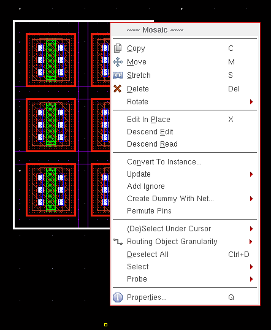
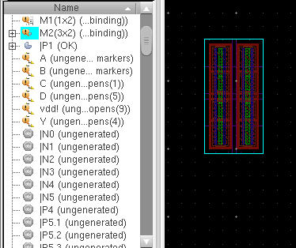
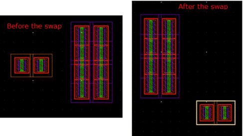

Layout XL Commands Supported for Mosaic Instances
Most Layout XL commands are applicable on mosaic instances and can be used to generate the same results with mosaics as with regular layout instances. The mosaic shortcut menu displayed in the figure below suggests some of the Layout XL operations that are supported by mosaics.

|
Command
|
Description
|
|
Mosaic – Smart Display
|
Layout XL supports displaying the abstracted view of mosaics using the Smart Display toolbar.
|
|
Mosaic – Update
|
Mosaics retain their connectivity, if any, during their conversion from or to a regular instance. Any updates that you make to the mosaic connectivity or parameters are reflected in the layout using the following Layout XL commands:
-
Define Device Correspondence
-
Update Components And Nets
-
Update Layout Parameters
-
Update Schematic Parameters
The Update commands listed above, except Define Device Correspondence, are applicable to mosaics only when there is a one-to-one correspondence between the selected mosaic and the schematic instance bound to it. For the mosaic and the bound schematic instance to have a one-to-one correspondence, the size of the mosaic must be equal to the schematic mfactor value.
For example, if the size of a mosaic instance is 6 (3x2), and the mfactor of the corresponding schematic instance is 6, a one-to-one correspondence exists between the layout and schematic instances. In this case, the XL Status reports the correspondence as OK and Update commands, such as Update Layout Parameters and Update Schematic Parameters work.
But, if the mfactor of the schematic instance is 4 instead of 6, the XL Status reports the correspondence between the schematic and layout instance as complex binding. In this case, Update commands do not work.
|
|
Mosaic – Check
|
Layout XL enables you to check the mosaic instances for connectivity and parameter mismatches, if any, by running the Connectivity – Check – Against Source command. The Check Against Source command checks only those mosaic instances for which the XL Status reports an OK.
|
|
Mosaic – Probes
|
Layout XL supports probing of mosaics and the probe you apply displays in the Navigator assistant and in the layout canvas, as shown in the figure below.

|
Mosaic - Swapping Components
|
If you have two mosaics in a design, you can use the Edit – Advanced – Swap Components command to swap their components, as displayed in the figure below.
|
|

|
Related Topics
Display of Mosaics in Abstracted Mode
Design Check Against Source
Layout XL Design Data Updates.
Design Probing
Swapping Components
Return to top